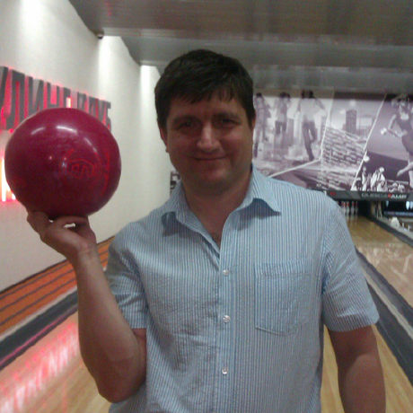

Биография

Владимир Борисович Макайда
1965 года рождения
Родители рабочие
Женат, дочь, сын
Прикладная математика, ДИИТ, 1987
25 лет живу в городе Батайске Ростовской области
Работал инженером-математиком, программистом в Ростовском вычислительном центре СКЖД,
затем с 2002 года в Ростовском управлении Центра
внутреннего контроля ОАО "РЖД".
Спокоен, стабилен, надёжен.
Всегда в тренде современной методологии,
языков, инструментов программирования.